OPERATIONS HANDBOOK
中台运营培训手册
从系统基础到订单履约，按章节查阅操作流程。输入关键词可快速定位，点击截图可放大查看。
第一章 岗位工作概述
欢迎加入运营团队！
本岗位主要负责：
订单处理
系统配置
任务待办
异常解决
全链路履约
工作目标：
保证订单正常流转、采购正常进行、订单顺利发货、客户及时收货的全链路履约。
系统介绍
1.1 点石系统
主要用途：
商品配对
商品价格配置
客户收款配置
订单处理
简单理解：
点石负责管理客户商品&订单价格
1.2 马帮系统
主要用途：
商品采集
订单管理
发货管理
物流管理
供应商管理
成本维护
简单理解：
ERP负责管理商品库存&订单履约。
订单处理流程
审批流介绍
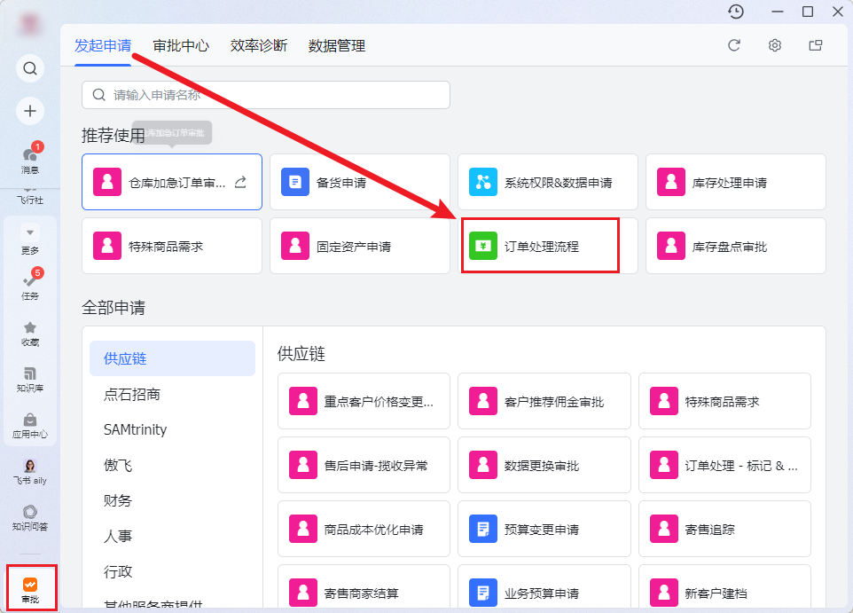
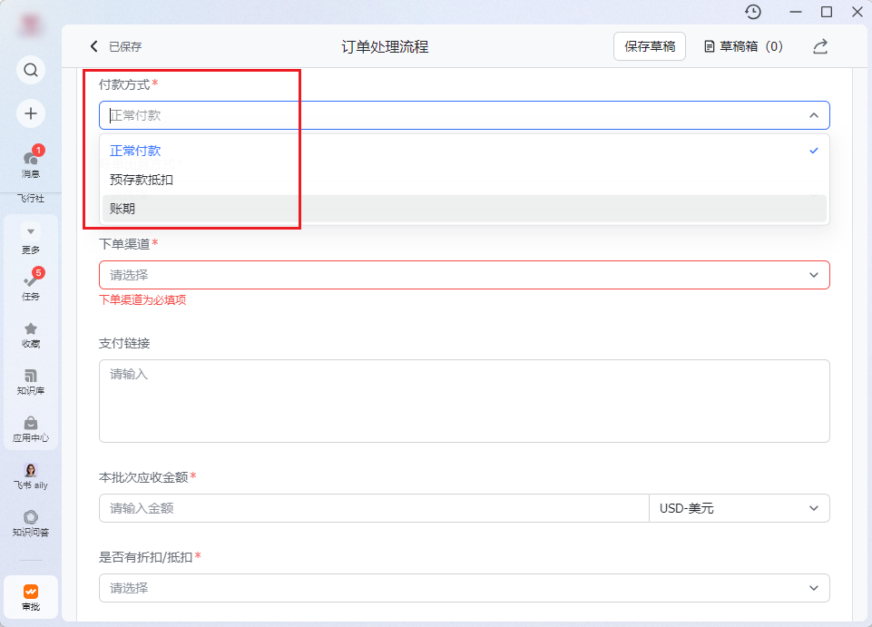
Tips：如客户审批内信息有变化需及时同步BD提交资料变更审批进行更改完善
付款方式介绍
正常付款：客户下单后现款实付，资金到账才可进行订单处理
预存款抵扣：客户预先充值货款，下单直接从预存余额扣钱，余额充足无需走待审核，直接可以标记进行订单处理
账期：先拿货后结算，无需当下付款提前标记处理订单。BD预先发起“账期申请”审批，按账期额度提前为客户处理订单，需监控账期额度剩余。
审批流使用📌
背景：结算组发起审批——运营确认账单
流程：
1.审批到达后，确认审批客户付款方式
在payment表&点石批次试图搜索审批客户邮箱/批次号
预存款客户：核查订单明细附件payment表本批次订单数&订单金额&本次抵扣后余额是否正确，如若余额≥0，进行订单处理标记；如若金额＜0且可覆盖一部分订单，仅处理标记可覆盖批次订单；如若金额＜0且完全不够标记本批次订单，则不进行任何处理
正常付款：确认本批次应收金额&订单明细附件标准正确即可通过审批
账期：按照审批客户账期处理方式，对本批次订单进行处理
①标记订单卡待审核
②标记订单打标暂不发货
③标记订单不做额外处理直接发货
背景：结算组发起审批——运营处理
流程：
审批到达后，在payment表&点石批次试图搜索审批客户邮箱/批次号
核查转账凭证金额&币种&日期&收款主体和BD填写客户实付金额是否一致
核对本批次应收金额和客户实付金额是否一致，对应填写正确/多收/少收
如有payment表需要进行充值填写
进行订单处理
提交企微审批
TIps：如有超过汇率差的多收情况需要进行记录📝；如少收只可处理支付金额可覆盖部分订单
第三章 ERP（马帮）操作
商品采集刊登
前期准备：找到各个组的配价表
链接采集与基础信息编辑
产品中文名称：格式为「材质+用途」，要求简洁，材质优先填写平价表述(如涤纶、亚麻、塑料、玻璃，避免纯棉、羊毛、陶瓷等)。
销售员：对应提供工单/商品信息的销售，为必填项。
多属性信息(变体)编辑【核心步骤】
筛选变体
生成中文标题:点击「中文标题一键生成」，确保中文标题无英文、不冗长。
修改变体颜色为英文:保证SKU列无中文。
生成并编辑SKU编号:点击「一键生成SKU编号」
生成英文标题:点击「英文标题一键生成」,完成后检查核对。
核对成本价:与销售提供的准成本价一致,无偏差。
核对重量:与工单/销售提供数值一致(克为单位)。
清理产品描述：将产品描述列内容全部删除。
仓库、采购与申报信息填写
选择仓库：销售三组仓
申报信息：
点击「一键引用标题」
查询并选择报关编码：仅选蓝色有效编码 ，灰色标注「失效」的不选，优先选结尾 0 多的编码（如3个0）；
填写申报价格：根据实际采购成本对标申报美金。
低于 20：$1
20～40：$2
40～60：$3
60～100：$5
100 及以上：$8
特殊标记：按物流渠道勾选（不是商品属性），带电池/液体/化妆品等对应标签，无特殊属性则不填。
所有特货类型，不冲带电渠道就勾液体
同步库存 SKU 与认领
点击「批量同步到库存 SKU」，必须勾选「正常销售」（否则库存 SKU 中无法搜索）
认领商品：选择对应平台，认领到对应客户马帮店铺。
最终刊登编辑
图片： 保留无中文的图片 ，≤6张，删除多余图片（操作：勾选需要图片→删除未选中）
SKU信息：将所有产品的包裹重量批量改为10克（ 固定包装重量）——销冠组为20g
重点检查
采集商品是否和客户所需商品一致；采集商品图片是否维护正确——否则可能导致：①采购错误②入库异常③客户投诉
商品属性是否正确打标（普货无需打标/带电池/液体化妆品）——否则可能导致：物流配置错误
包裹重量是否统一填写10克——否则可能导致：后续点石系统配价调价造成影响【销冠组统一填20g】
商品重量 填写单位：g（克）&整数，否则可能导致：系统可能无法正常处理
新品采集刊登后需要同步物流组渠道
异常处理
刊登到点石后，如何修改商品信息——点石-仓库商品管理-修改价格/重量
对于特货/敏感商品——这种敏感性的，完全以另一种东西来写，比如说，袋装压缩毛巾啥的。如果走华翰、领讯这些物流渠道，可以写除臭丸这种，但是普通物流，就不行。下图是华翰采集的示例

更换供应商（换供）
什么情况下换供：原供应商缺货、发货太慢、故意不发货、价格上涨、优化供应商
操作步骤
找到新的供应商产品链接：（招商二次寻源/优化商品）
批量处理方法：库存sku——批处理——批量添加供货产品链接


单个处理：库存sku——批量添加供货产品链接——选择特定的款式/尺码——设为默认供应商
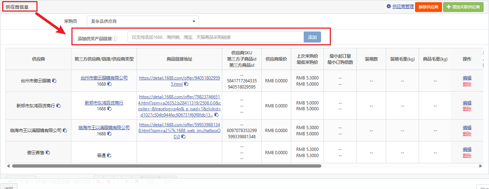

手动创建/模板导入库存SKU
适用场景
无1688链接，无法通过采集刊登创建的商品，支持单个手动创建和批量模板导入。
有1688链接，但是变体不全，商家可以做但是链接里没有
操作入口：库存SKU
方式1：单个手动创建
搜索结果_HS编码网（商品报关编码网站）

点击「手动创建库存SKU」，填写带＊的必填项，核心信息要求：
SKU编号：保证唯一性，建议以「当日日期＋时间」命名（如2606061745）。
库存中文名称：遵循「材质＋用途」，简洁无英文。
SKU状态：选择「正常销售」。
变体区分：有变体时以「-」分隔（如black-s、black-M），每个变体SKU编号唯一。
其他必填：成本价、申报信息、仓库、商品重量（克为单位）、产品图片。
上传产品图片：可直接上传图片文件，或粘贴jpg格式的图片在线地址（验证地址有效后保存）。
点击保存，完成单个库存SKU创建。
方式2：批量模板导入
点击「模板导入库存SKU」，下载官方库存SKU模板。
按模板要求填写信息，遵循上述「手动创建」的信息规范，确保SKU编号唯一、必填项无遗漏。
线下表格可提前上传图片（或填写图片在线地址），完成后在系统中选择编辑好的表格上传。
上传成功后，可在库存SKU页面补充编辑图片、信息，最后保存修改。
组合SKU编写流程
适用场景：客户固定2pc、3pc出单
前置条件：组合内的所有单品均已完成库存SKU创建，且能在商品库存SKU中搜索到
操作入口：马帮-组合sku-手动创建组合sku
填写基础信息：
组合中文名称：按实际填写（如首饰套装－项链＋耳环、包包套装黑色＋棕色）。
组合SKU编号：保证唯一性，命名规则同库存SKU。
图片：上传jpg格式图片，无中文。
添加组合内库存SKU：
从商品库存SKU中复制需要的单品SKU，粘贴至组合SKU编辑页。
填写每个单品的数量，可按需修改，点击「添加」确认。
填写申报信息：与单品申报信息填写规则一致，并填写报关编码。
点击确定，系统将自动计算组合SKU总重量（所有单品重量总和），完成组合SKU创建。
手工单/样品单创建📌
什么是手工单？：系统没有自动生成，需要人工创建的订单
一、创建流程——手动创建优化为使用小程序生成-->手工单生成器 v2（异常at秦畅）
进入「订单」页面，点击「新增订单」。
填写订单号：如无指定订单号，按「销售姓名＋当天日期＋时间」生成（如josie2606061813）。
填写交易号：如无指定交易号，复制订单号即可。
选择付款时间：选择当前时间即可。
填写收货地址：将BD提供的地址信息拆分，按下图所示规范填写至对应字段。
选择商品：选择所需商品SKU，并填写对应数量。

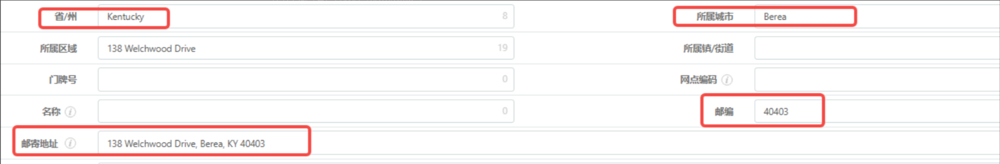

二、建单后的处理流程（新客户）
设置发货限制：建单成功后
必做：标记打包视频
客户未付款：订单卡入「待审核」状态-待确认款项
客户已付款：打标「暂不发货」，等待风控确认到账。
手工单金额为0，或预存款客户有余额时，无需卡单。
同步订单信息：将订单号反馈至任务评论区，并填写手工单表，同步数据组。
配置物流：给物流创建任务，安排物流渠道，获取物流号后反馈至任务评论区。
付款后放行：客户付款后，将订单从「待审核」中挑出，或取消「暂不发货」标记。
三、手工单任务跟进规范
手工单仍须完成「建单、打标、同步填表」等标准动作。样品单手工单任务须保留至妥投后才能关闭，每日检查任务时，须同步以下节点的最新状态：
同步单号及打标截图：在任务描述中同步三个信息手工单单号、货运单号及物流渠道，并将马帮中「打包视频」标记的截图上传至任务评论区。
跟进国内段运输：追踪商品国内段在途状态，到仓后催促加急入库、上架。
跟进仓库打包视频：向仓库催要打包视频，将打包视频原件及仓库返回的打包视频上传至任务评论区和附件。
跟进国际段履约：仓库发货后，每日检查并更新国际段物流轨迹，直至妥投。
妥投后同步销售：样品单妥投后，通知销售商品已送达，以便跟进客户满意度及反馈。
检查马帮未配对订单处理
待处理筛选订单商品状态自动创建

导出订单，可以使用有留言模板（主要是为了看店铺）

筛选对应店铺，马帮配对，找到未配对产品


如何找到需要配对的sku（霍格沃兹）——3种方法
用商品名称在之前出过的订单里找sku（如果搜不到，可以把点石时间范围拉长），进行最终确认（图片、颜色、尺码），点击配对，粘贴上有配对的sku


b. 用商品名称在配价表里搜索

c. 以上两种方法都找不到，那就是没有，祭出绝招：给BD建任务，让他们去寻源

对配对订单进行重新交运
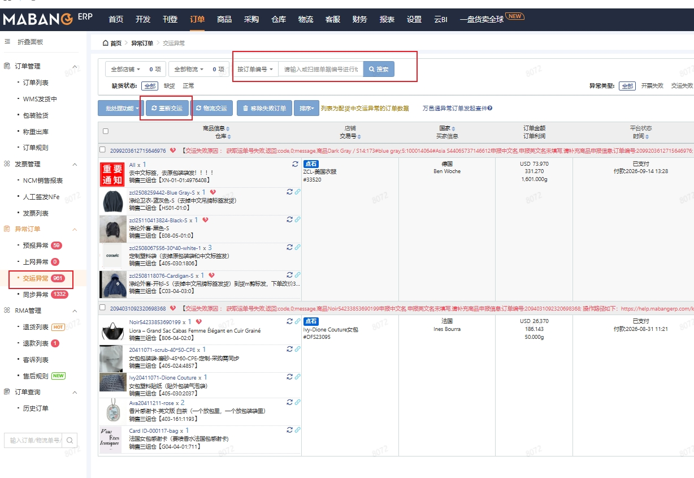
待审核订单中未配对的商品步骤相同
马帮打标
操作步骤：


卡进/挑出待审核
卡待审核：

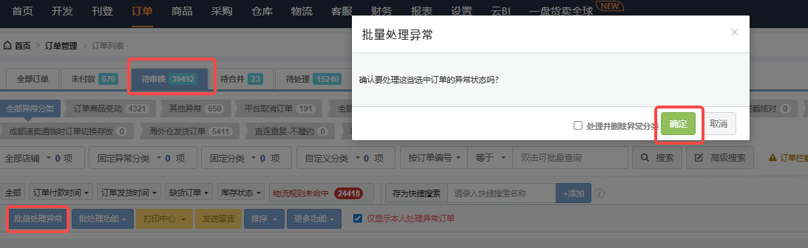
挑出待审核
马帮规则设置&赠品设置 马帮培训
入口：订单-订单规则——注意第一步一定是停用规则
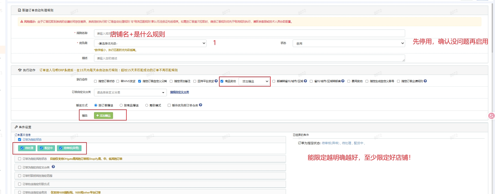
马帮作废订单

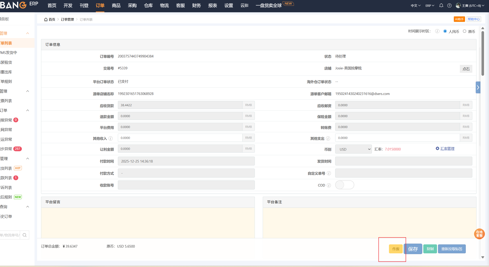
作废备注：崔佳兴-马里奥小潘-BD要求 / 李淑宇-除毛手套-唐人取消退款
马帮加急订单
马帮——待处理：按照如下条件筛选订单
订单状态：选择「待处理」。
自定义分类：选择「多选取交集」，以下分类均勾选「反选」：
TJ-定制品。
海外仓发货。
仓库加工普货客户没给定制信息。
暂不发货。
固定分类：
交运状态：正选「有货运单号」。
缺货订单：反选。
筛选后，同步订单号给物流组并建加急任务。16点之前的订单直接加急，16点之后的订单走审批加急
这是所有组加急订单的筛选方式，本组的需要选上自己组的马帮店铺
马帮删除/增加/更换sku
页面：修改发货仓库或商品


删除sku、增加sku、更换sku
合并/拆分订单

检查/挑出卡进有留言分类的待审核订单
有留言挑出待审核
马帮待审核其他异常导出订单

自定义分类搜索有留言找到对应店铺（霍格沃兹所有都需要）
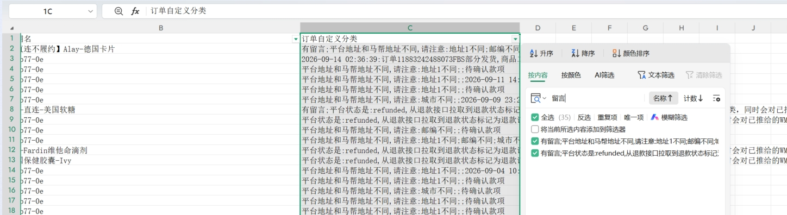

搜索订单批量处理异常（注意只在其他异常分类里挑出，千万不能误挑出待付款确认款项的！）
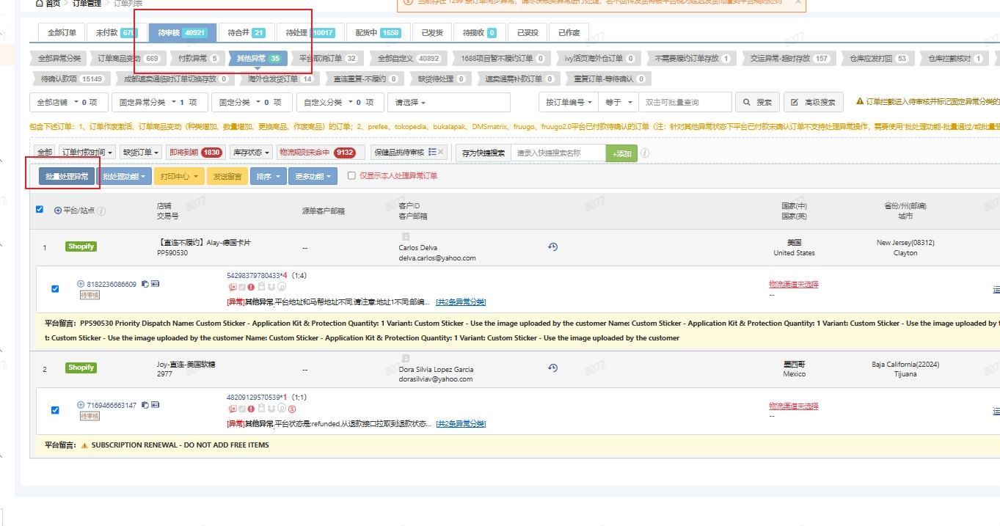
客户付款/标记支付后 需要取消订单/缺货给客户退款：
选中订单 批处理功能-批量作废 ！务必要备注好作废原因
去点石找该客户的待客户支付订单退款（可以找一单/多单，根据具体情况决定）
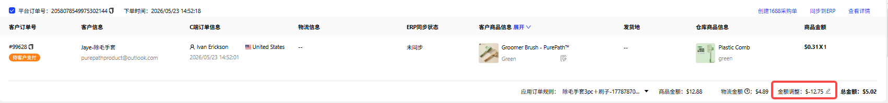
库存更新
库存更新sop——只需要可用库存总量
库存更新sop——需要字段较多
以上两种方法一致，都是xoolup，只举例一种
1、去库存表复制需要更新库存的sku
Josie — 库存&赠品管理（正常客户）
VZN STOCK UP-updating（老钱眼镜）
https://docs.google.com/spreadsheets/d/1hLur6Mu2WhHoIzVs0Is7XZOena4CVtuKQDF66FzWUMo/edit?gid=1638802734#gid=1638802734（美英吊坠）

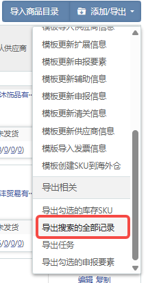
3、选择【josie组库存监控】模板导出

4、复制订单编号和相应字段，去库存表xlookup即可
订单备注


第四章 点石系统操作
配对配价【标准】
注意：
点石未配价商品，但在DSers是awaiting payment状态，首次在点石配价要确认好价格再点保存，二次更新价格在DSers不会进行同步（解决方案：配价准确/配价完成后在DSers将订单进行回滚）
点石配对新国家——单pc/多pcs切换 注意之前报价
！一旦切换牵一发动全身，不仅是当下国家sheet，其他国家下都会被集体切换（如果出现每pcs的sku单价特意配的不同情况下，一旦被切换就会变没）
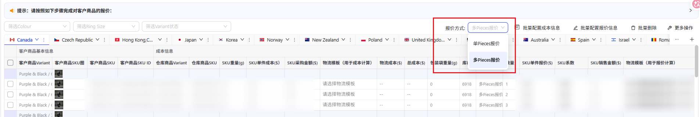
配价前要去小程序核价！！！利润小于10%不能配，要再次确认
配对配价【特殊】——搓模板
前因：客户指定多pcs报价，标准物流模板无法实现（注：模板不一致会被系统判定为两个包裹，暴力相加；因此，措模板大概率和其他品组合出时是暴力相加的）
逻辑：报价=成本+物流费（物流费=sku重量*公斤费+挂号费），我们设定好挂号费，填好sku重量和成本，输入指定报价可通过公式逆推出公斤费
寻源报价（小）/模版这是我给霍格沃兹错模板的表，分美元模板和人民币模板（两个都可)

指定报价+1pc的单价和重量是需要手动填的，其他都是公式（霍格沃兹美元的模板要求留痕，所以直接复制一个在下面需要写好商品）


生成重量段、公斤费、挂号费后在点石创建物流模板
最终一定要好好检查生成的价格是不是我们想要的报价！
上传物流模板/手动添加物流模板
在群聊（自营大协调）搜索最新的物流商报价，挂号费+2.5

点石配赠品
马帮操作
采集刊登赠品 OR 只采集赠品，通过插件同步到点石
维护赠品信息和主品一致 且 申报价值=1$
点石操作：
管理赠品——选择相应的品
先配赠品，再配价
点石订单规则设置
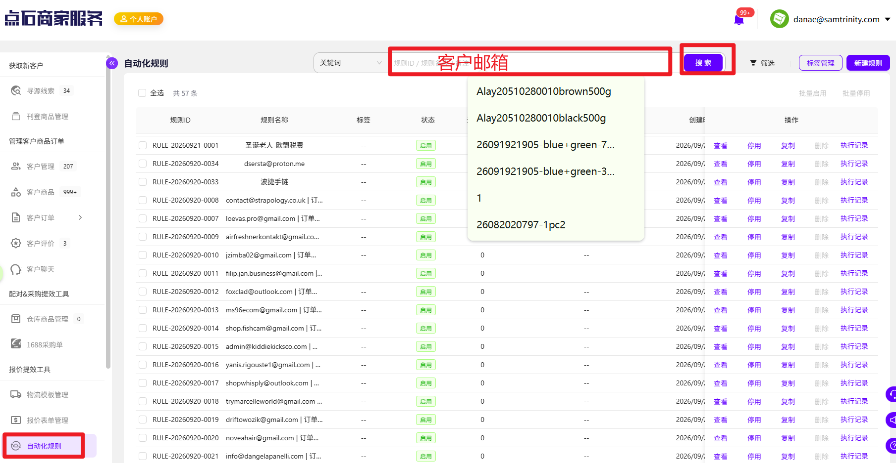
组合sku——“马帮同步点石”
用插件——点石商家服务插件
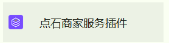

订单改价
单个订单-记得保存


批量改价-记得保存
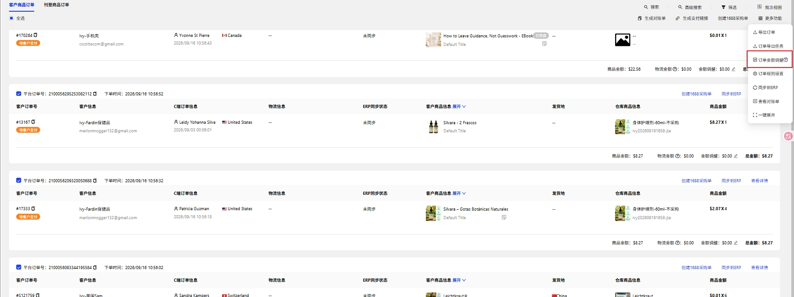


对账单改价——上传后填写名称，直接保存应用即可


点石配价新国家
检查店铺常用的物流模板
复制sheet+核价
点石试算多ps
目的：为了防止BD指定多PC报价时，系统配不出来
使用场景：BD给aus1区报价$7.77，需要运营生成AUS1-4区的 1-6pc的报价
背景：销售报价时会指定1、2、3pc的价格。对于运营很难在点石系统上去匹配出来一模一样的，所以我们就有了一个试算。
试算就是指销售告诉：采购价、重量、物流渠道，运营通过试算去给他一个多PC报价（可能点石里还没有这个商品）
销售直接把这个多PC报价报给客户，假如客户同意了这个价格，建工单让运营配对配价的时候，可以根据相应的模板，得出的多PC报价一定是他给客户报的一样的
操作步骤：
进入点石 - 仓库商品管理 - 搜索试算 - 编辑
填写3个信息：实际重量、实际成本、包装袋重量——确认


创建报价单 - 随意填写必填字段 - 确认


单一国家多pc报价：先设置好1pc的物流模板（确认店铺的常用模板和商品属性）、物流系数、总报价；点击多pc报价即可生成——对多pc进行核价，看毛利是否满足


多国家多pc报价：复制sheet——对多pc进行核价，看毛利是否满足

点石换配对sku
第六章 新客户“一条龙”服务📌
为什么要重点关注新客户？
客户转化初期无信任基础
第一批履约展现供应链专业性
新客户新商品新商家不确定性强
操作流程——6步
点石更改新客户名称——建档审批、点石客户、马帮店铺三个名称要保持一致
点石客户管理-搜索新客户邮箱，命名为新客户建档审批同样客户名称(多为销售+客户名称)例如Josie-全球眼镜
绑定ERP账号——注意是马帮的私有云不是公有云（程金）
点石系统设置-ERP&订单平台授权-马帮店铺命名同样客户名称，例如Josie-全球眼镜
跳转登录马帮-选择私有云-店铺授权(必须等授权成功再退出页面）
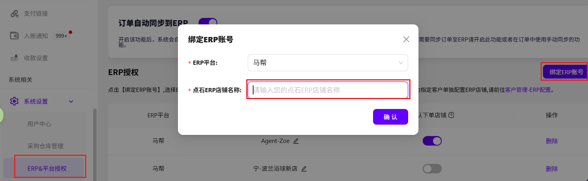
关联客户与ERP店铺
点石客户管理-更多操作-编辑ERP设置-选择刚创建的店铺

马帮店铺税号设置
马帮-店铺列表-店铺设置-跳转最后一页-批量选择店铺-税号应用给所有【欧盟+挪威】

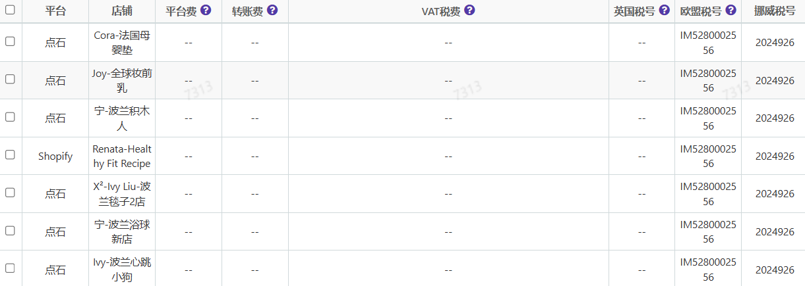
新客户收款配置
①确认客户付款方式&币种
②确认&核对销售给客户的银行卡信息
③点石客户管理-更多操作-编辑收款配置-选择对应收款方式&账号
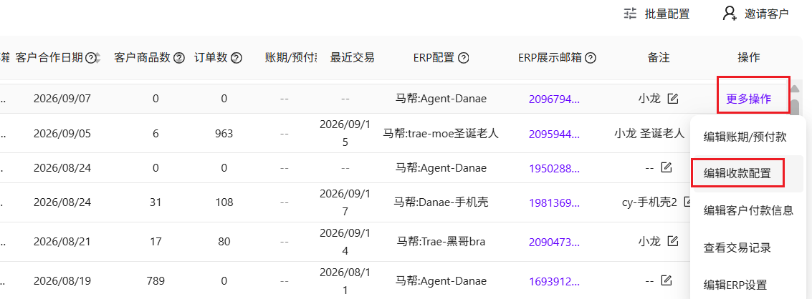

第一批订单客户银行转账付款标记处理后，需去马帮把该批次打标“暂不发货”，待确认到账后取消标记，正常发货
第一批订单标记处理进入马帮后，任意挑选一单打标“拍摄打包视频”，追踪仓库视频反馈确认无误正常发货
对新客户履约情况by天追踪采购到仓情况，提前告知仓库绿色通道处理
第七章 常见易错点
（1）中文SKU更改全流程
导出相关sku
通过公式定位异常sku
公式：（A2为sku列）=IF(REGEXMATCH(A2,"[\u4e00-\u9fff]"),"有中文","无中文")
询问仓库
是否影响入库、商品包装是否贴签；有影响进行以下步骤
复制原sku建新sku
注：复制新sku会导致部分信息缺失、需导表<新建sku必填项> 在库存sku页面 判断具体的缺少信息
eg：销售负责人；统一成本价、最新采购价；供应商名称、供应商链接；商品包材、订单包材；采购员；仓库警戒库存、库存警戒天数等
库存sku上传模板
库存sku上传模板-必填字段版.xlsx
同步仓库新旧sku
凌晨静态时刻重新贴签
批量更换库存
贴签完需及时更换
换配对（点石）
在第二天上班前必须操作完毕
新sku批量上传至点石
定位相关sku的所有点石商品、换配对乱序、需细致
每个商品只需修改第一个国家、其他国家会自动修改
同步运营与采购
该批次订单标记支付后需同步运营、运营查看是否还有包含中文sku的订单、进行批量修改
运营修改完所有订单通知采购正常下单
二次筛查订单
该批次所有订单、是否有待处理订单中有不缺货未转配货的、同步物流组进行加急转配货
第八章 新人每日工作清单
上午
□ 查看待审核订单
□ 查看未配对订单
□ 查看采购情况
□ 查看入库异常
下午
□ 检查物流规则
□ 检查新品情况
□ 检查退款订单
□ 检查退货进度
下班前
□ 检查待处理订单
□ 检查缺货订单
□ 检查点石价格同步
□ 检查异常是否关闭
新人工作口诀
先检查，再操作；
先确认，再保存；
先备注，再处理；
有异常，必跟进；
有问题，先反馈。
做到：
不漏单、不漏货、不漏款、不漏异常。